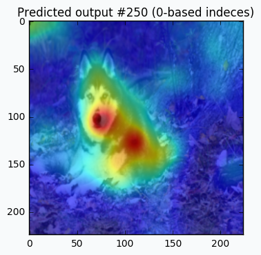

Visualizations
Hinton diagram
More information about the Hinton diagram you can find in documentation. The small example is shown below.
import numpy as np
import matplotlib.pyplot as plt
from neupy import plots
weight = np.random.randn(20, 20)
plt.style.use('ggplot')
plt.figure(figsize=(16, 12))
plt.title("Hinton diagram")
plots.hinton(weight)
plt.show()
{kind=link}
Error plot
The plot shows the basic information about network’s training progress.
from neupy import algorithms, plots
gdnet = algorithms.GradientDescent((2, 3, 1))
gdnet.train(x_train, y_train, x_test, y_test, epochs=100)
plots.error_plot(gdnet)
More information related to this plot function you can in the error_plot documentation.

Layer structure
Visualize relations between layers in the network.
from neupy import layers, plots
network = layers.join(
layers.Input(10),
layers.Relu(20),
layers.Softmax(4),
)
plots.layer_structure(network)

Saliency Map
Read more in the Saliency Map function documentation.
from neupy import plots
vgg19 = ... # define pretrained VGG19 network
dog_image = ... # load image of dog
# apply preprocessing step to dog image
processed_dog_image = process(dog_image)
plt.imshow(dog_image)
plots.saliency_map(vgg19, processed_dog_image, alpha=0.6, sigma=10)

{kind=link}